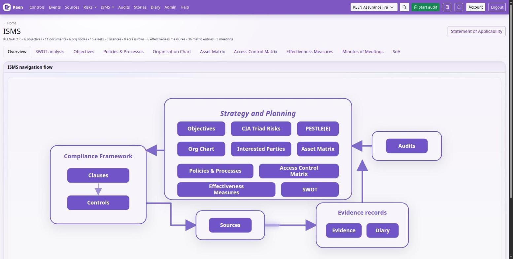
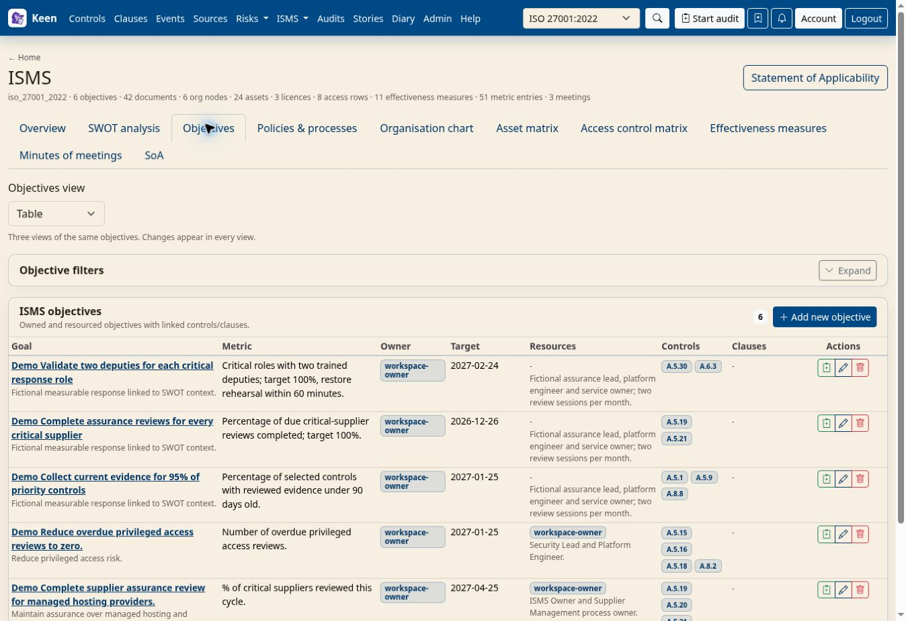
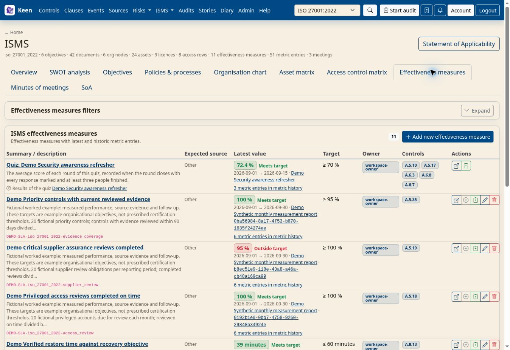
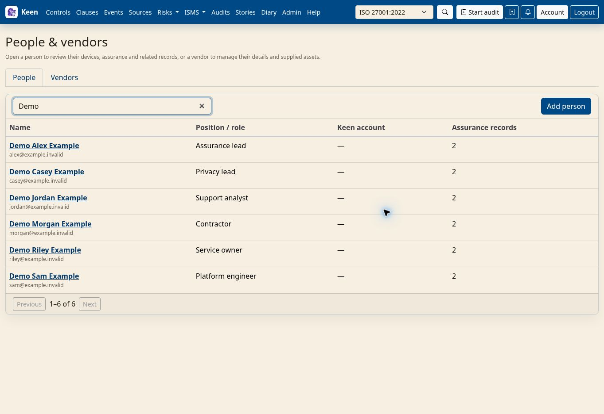
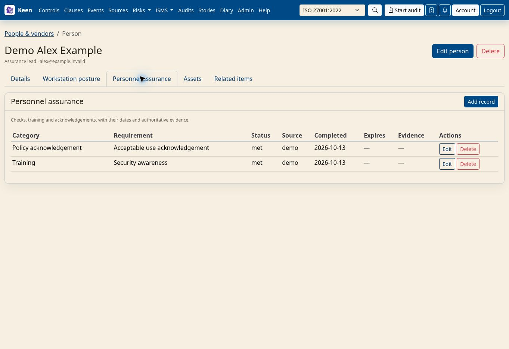
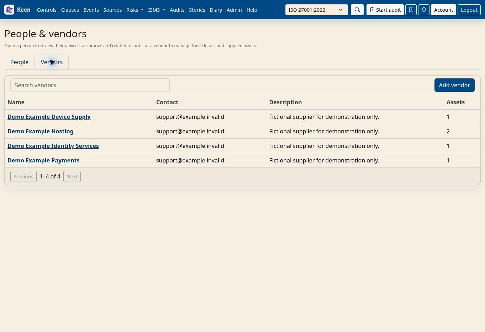
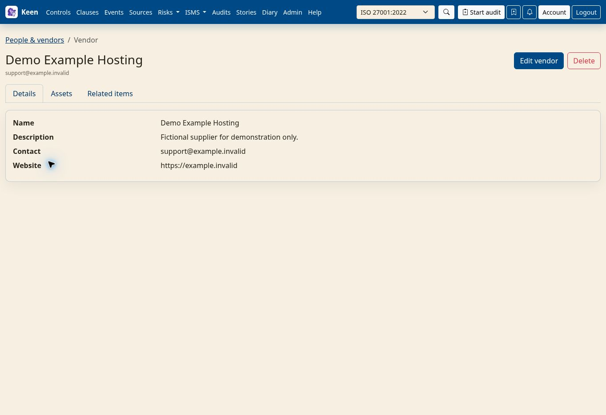
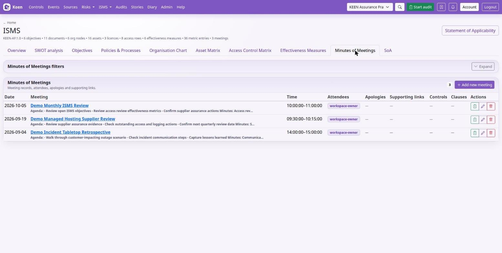

Using Keen
Context, objectives and ISMS records
Chapter 8 of 17
Context and objectives
The ISMS screens hold the records a management system runs on: the context you operate in, the objectives you set, and the assets, people, documents and meetings that carry the work. This chapter introduces them one at a time, starting with context. ISMS read and manage permissions apply, and risk permissions include them.
PESTLE(E) and interested parties
PESTLE(E) records the external and organisational issues that shape your scope: political, economic, social, technological, legal, environmental and ethical. For each issue, say what it is, why it matters, which business processes it touches and which framework clauses it relates to.
Interested parties records the people and organisations whose needs affect the management system: what their interest is, which controls relate to it, and how and how often you plan to communicate with them. A party is recorded once for the whole organisation; the controls that address it are linked per framework, so the same regulator can relate to different controls in each framework you assess against.
Keep context and evidence apart. A customer's expectation is context. A completed review or a signed agreement is evidence that the expectation was met. Revisit both lists when the organisation or its environment changes.
Organisational context: PESTLE(E) and interested parties
To record a PESTLE(E) issue, choose Risks → Add a risk and the PESTLE(E) factor kind, or add it in the PESTLE(E) workspace: describe it and its rationale, choose its type and lens, and link the relevant business processes and framework clauses with a relevance level. The PESTLE(E) tab of the Risks dashboard lists every factor beside the other kinds of risk. A change in law, dependence on a key supplier or a new technology each give context for risks and objectives.


To record an interested party, note who has the need or expectation and the nature of their interest, add the planned communications (method, relevant events or frequency), and link the applicable controls in the framework you are viewing. A risk names the interested parties, people and vendors it affects, and the risk wizard adds a new interested party by name and nature when none matches. Both lists are worth a look at management review, and both can be sampled into audits.
Define objectives you can evaluate
Open ISMS → Objectives. An objective pairs a requirement with a goal, an owner, a metric and planned start and target dates. Describe the completion method and the evaluation method separately: doing the work and checking that it achieved the goal are different activities.


Use the resource fields to say who and what are needed, link the relevant controls and clauses, save, and check the detail page and changelog. At review time, compare the intended metric and evaluation method with the actual effectiveness observations and meeting decisions.
Example. Requirement: tested recoverability of essential systems. Goal: restore a representative service within the agreed recovery objective. Completion method: perform the documented exercise. Evaluation method: compare the measured recovery time, integrity checks and outstanding issues with the agreed criteria.
Use the Objectives views to review statuses and dates together, and link objectives to the SWOT items that explain the intended response.
Manage the ISMS
Each ISMS record type answers one question. This section introduces them briefly; documents, people, assets and measures each have a chapter of their own.
Maintain the ISMS
- Objectives
- Intended outcomes, linked to controls, owners and effectiveness measures.
- Effectiveness measures and metrics
- A measure says how effectiveness is assessed; a metric is one dated observation or score for it.
- Documents
- Policies and processes, with folders, types, tags, rich text, version history and comments.
- Assets
- The resources you manage, with ownership, organisation relationships and related risks.
- Organisation chart
- Roles and reporting relationships. Roles can own risks.
- Access Matrix
- Who, or which role, should have access to an asset and at what level. It records intended access; grants and revocations happen in the external system.
- Application Configuration
- Relevant application settings, documented.
- Minutes of meetings
- Decisions, discussion and attendance, including people without Keen accounts.


Before you add a metric, review the measure's method, target and source. Some metrics arrive through configured webhooks. Where a measure records automatic zero values, read them as part of its method and check source coverage separately.
Save substantive document changes as a new content version, so the history shows which wording was in force at any time. If someone else edits at the same time, a reload reconciles their changes.
Going deeper: how ISMS links become evidence
Linking an ISMS record to framework controls or clauses records an automatic Diary entry for the record. The entry lists its current control and clause references and counts towards the linked controls' evidence. Risks and interested parties linked to controls work the same way, so each record linked to a control counts towards the control coverage on Home and the Controls page. Revising the links updates the entry and credits each added mapping to the person who saved the record.
People and vendors








Open a person for Details, Workstation posture, Personnel assurance, Assets and Related items. Workstation posture summarises reports from linked workstation agents; an empty page means no such devices are linked. A check reads Not established when current reports do not confirm the setting. For example, Windows switches the screen saver on by default without selecting one, so that alone does not establish a screen lock. Not collected means the device reported that it could not read the setting on its last run. Where your organisation sets its own targets, such as how soon a screen must lock, each result is judged against them; each observation shows the measured value and the target beside its result, and links to the signed evidence. Open a vendor for its Details, Assets and Related items.
A check that needs attention offers Create a risk to anyone who manages risks. The form below the device's checks starts with a title and a threat summary drawn from the evidence; choose a treatment, an owner and a review date, then save. Keen adds the risk to the workstation's asset, creating that asset under End-user devices › Workstations and linking it to the person the first time, and links the risk to the controls the evidence maps to in the selected framework. Open the risk afterwards to rate it or change its treatment.
To accept the risk, choose Accept with an owner and a review date. Until that date, the check reads Risk accepted and shows the risk beside it; the device's evidence and its count of met checks stay unchanged. After the review date, or once the risk is closed or treated another way, the check needs attention again and the risk shows Acceptance expired. People without risk access see that a risk is recorded, without its title.
People & vendors holds personnel and supplier assurance. A person does not need a Keen account: record their optional account, organisation role and assets, then add assurance records such as training, screening or policy acknowledgement. Each record can carry a category, requirement, status, completion and expiry dates, an authoritative source and an evidence link.
A vendor record holds supplier details and the assets it supplies. An asset has one supplying vendor, so assigning it to another vendor moves that relationship; review the effect before saving.
Meetings and decisions
Minutes turn a meeting into a record you can link to the objectives, risks and controls it affected.
Record decisions in meeting minutes
- In ISMS → Minutes of meetings, set the title, date and optional start and end times.
- Select the people attending and apologising. If someone is missing, enter their name and optional e-mail and use the offered action to create a Person for next time.
- Select supporting ISMS documents and add external links with meaningful titles.
- Write the agenda, minutes and decisions in the editor, naming the responsible people and follow-up dates.
- Link the relevant controls and clauses, save, and check the detail page and changelog.


For a management review, useful inputs are the current risks and treatments, measure trends, audit findings, objectives, changes in interested parties and overdue work. Record the actual decisions, then update the affected records themselves: the risk owner, the treatment status or the objective each live in their own record.
Going deeper: older account-based attendee records
Attendee fields for existing Keen users remain available for older records, which name accounts in place of people records.